Explore Kansas City, MO
A Brief History
Kansas City grew where the Missouri River bend met westbound trail traffic, becoming a stockyard and rail hub after the Hannibal Bridge opened in 1869. Country Club Plaza Spanish revival, jazz district clubs, and Liberty Memorial art-deco tower record how meat-packing wealth, Great Migration music, and interstate highway crossroads shaped a bi-state metropolitan centre.
Attractions Map
Top Sights & Activities
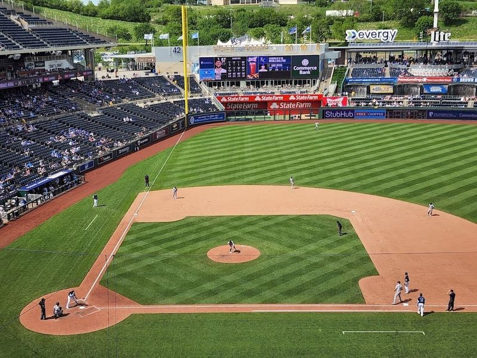
Kauffman Stadium
Kauffman Stadium, also known as The K, is a legendary pro-baseball complex in Kansas City. Built in 1973, it offers more than just baseball games with views of the City of Fountains and Midwest landscapes. Visitors can enjoy hometown refreshments from Boulevard Brewing Company and Belfontes Ice Cream, as well as AZ Canteen by celebrity chef Andrew Zimmern. The stadium is a beloved landmark where sports enthusiasts can catch exhilarating baseball games and create lasting memories.
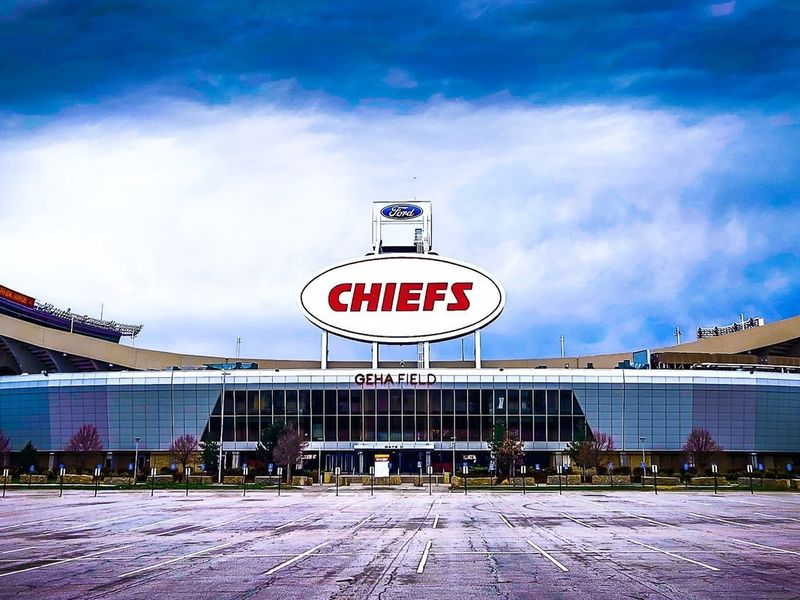
Kansas City Stadium
GEHA Field at Arrowhead Stadium is an open-air stadium that serves as the home of the Kansas City Chiefs and also hosts major music performances. The stadium has a rich history, having seen legendary NFL players like Joe Montana, Marcus Allen, and Derrick Thomas in action. Known for its passionate fans, it holds the Guinness World Record for the loudest crowd in an outdoor pro football stadium.
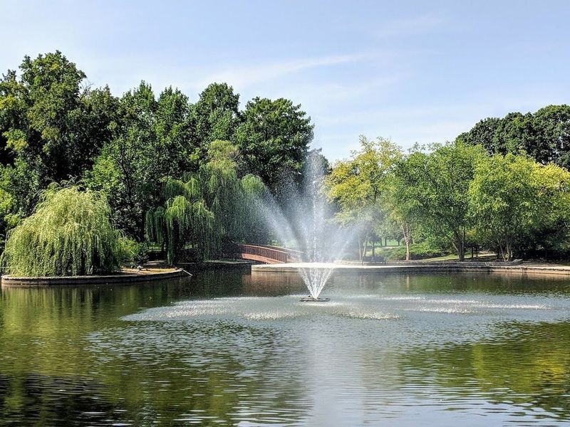
Loose Park
Jacob L. Loose Park, also known as Loose Park, is a sprawling 75-acre urban park in Kansas City with a rich history and diverse outdoor attractions. Visitors can enjoy the serene lake, tennis courts, picnic areas, and a charming rose garden that serves as a picturesque venue for outdoor weddings. The park also features historic Civil War markers and a Japanese Tea Room and Garden for those seeking tranquility amidst the city's hustle and bustle.
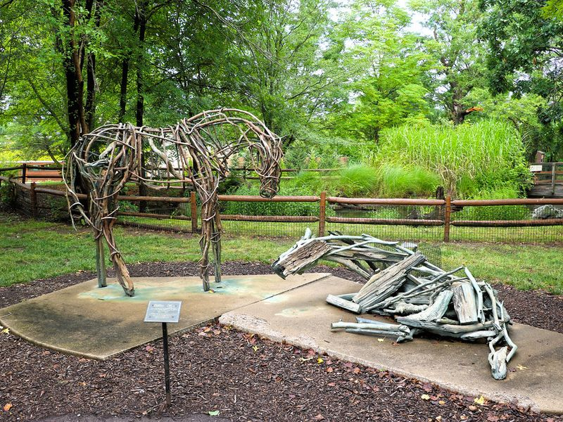
Kansas City Zoo & Aquarium
Kansas City Zoo & Aquarium anchors a familiar sightseeing stop in Kansas City, MO. Visitors encounter it along the city’s central routes through United States, often combining the visit with nearby parks, museums, and historic streets on the same itinerary. Street-level access and clear signage make it easy to reach on foot or by public transit from downtown districts.
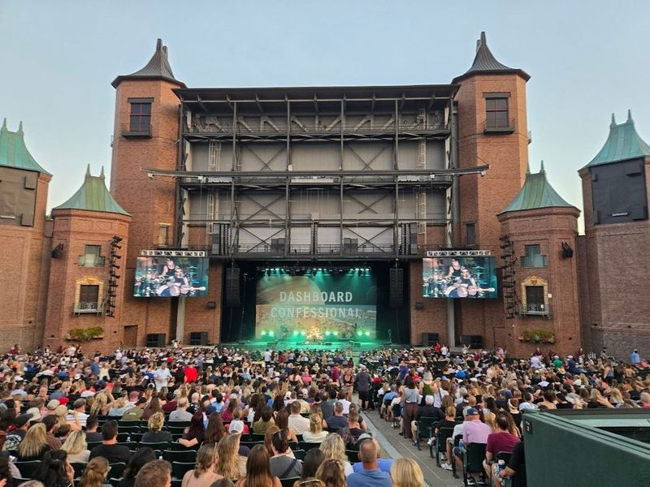
Starlight Theatre
Starlight Theatre, located in Swope Park, is a historic outdoor venue that has been entertaining audiences since 1950. As the largest and oldest operating performing arts organization in Kansas City, it hosts a variety of events including Broadway shows, rock concerts, and other productions. The theatre presents mesmerizing performances under the stars, creating memories for visitors.
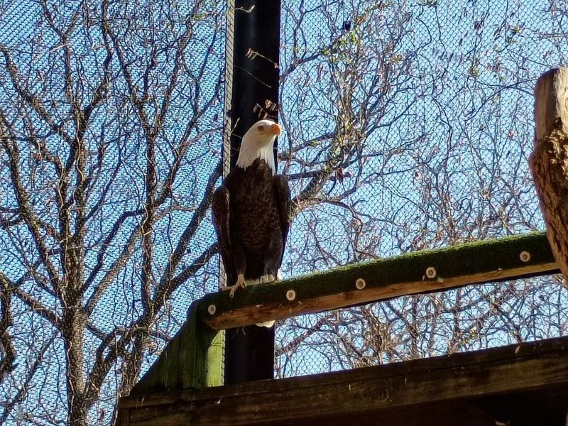
Lakeside Nature Center
Nestled within Swope Park, the Lakeside Nature Center is a vital wildlife rehabilitation facility in Missouri. It serves as a home to approximately 75 rescued and rehabilitated animals, including various bird species like owls, vultures, falcons, hawks, and bald eagles. The center offers educational opportunities for all ages through live wildlife exhibits and three interpretive walking trails.
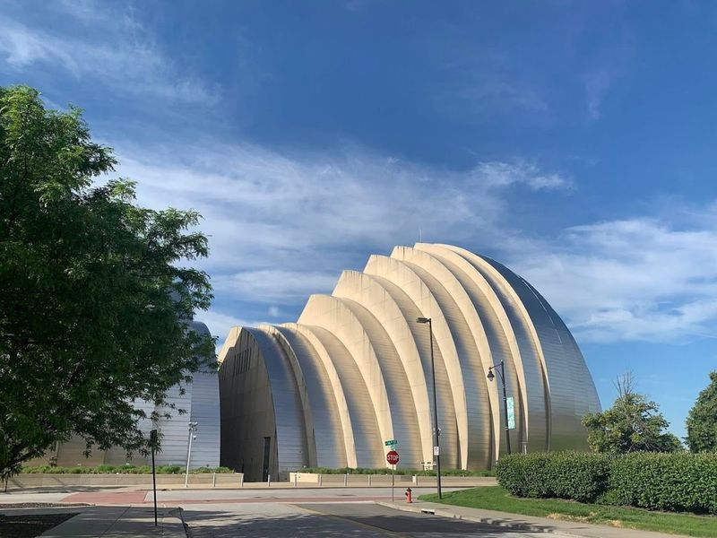
Kauffman Center for the Performing Arts
The Kauffman Center for the Performing Arts is a beautiful and technologically advanced theater that has hosted many famous Broadway plays and lyric opera performances. If you get the chance to see a live performance at this center, make sure to wear your fanciest clothes and be mesmerized by the beauty of the performers on stage.
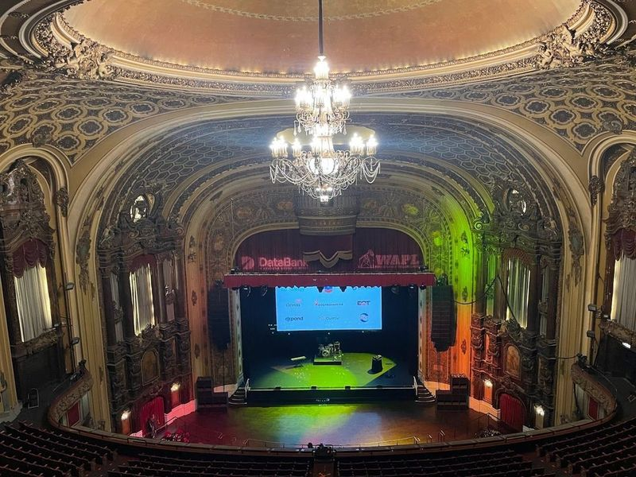
The Midland Theatre
The Midland Theatre, also known as the Arvest Bank Theatre at the Midland, is a historic concert venue located in downtown Kansas City. Built in 1927, this opulent theater boasts a seating capacity of 3,200 and features French and Italian Baroque architectural styles. The venue has hosted numerous renowned artists such as Chance the Rapper, Halsey, and Kacey Musgraves.
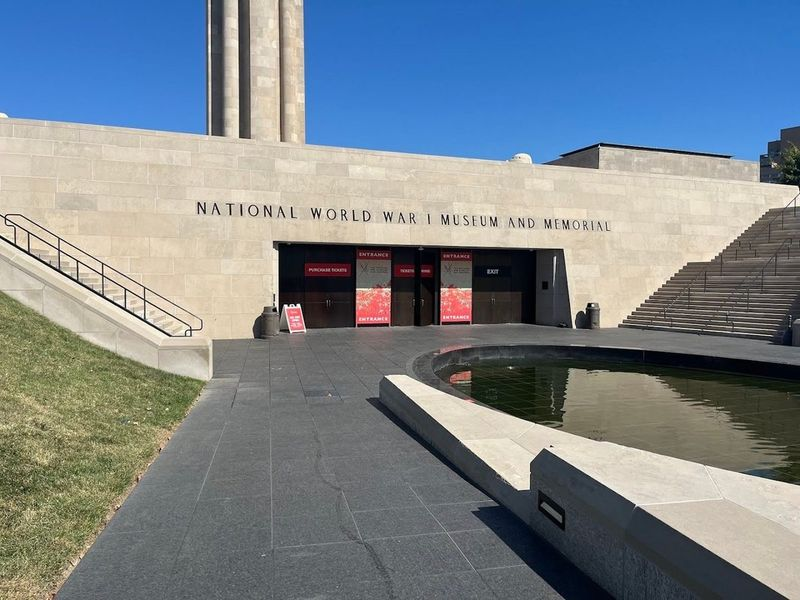
National WWI Museum and Memorial
The National WWI Museum and Memorial is the only public museum in the nation dedicated to World War I. As you enter, a glass-floored bridge over a field of 9,000 red poppies sets a reverent tone, each poppy representing 1,000 military deaths. The museum houses an extensive collection of over 100,000 objects, documents, and materials from World War I.
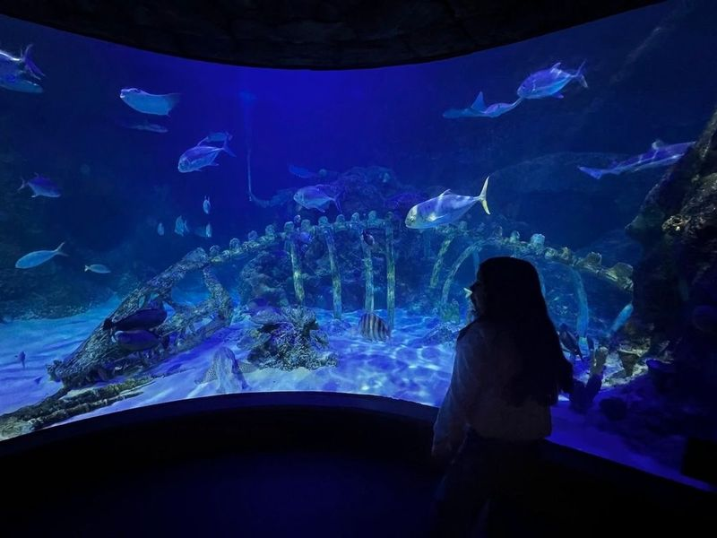
SEA LIFE Kansas City Aquarium
SEA LIFE Kansas City Aquarium is a captivating destination that showcases over 5,000 sea creatures in various ocean habitats. Located at the Crown Center in downtown Kansas City, this family-friendly attraction offers interactive experiences such as the TouchPool where visitors can interact with marine life like crabs and starfish. The aquarium also features an impressive underwater tunnel providing a 360-degree view of marine ecosystems.
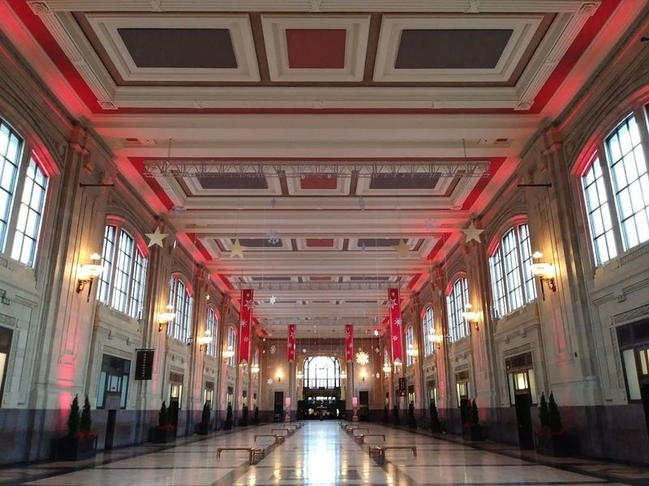
Union Station Kansas City
Union Station Kansas City, situated in the Crown Center District, is a beautifully restored and fully operational train station dating back to 1914. It houses the Arvin Gottlieb Planetarium, Science City, and the Regnier Extreme Screen Theatre. As the second-largest working train station in the country, it sees numerous Amtrak trains daily.
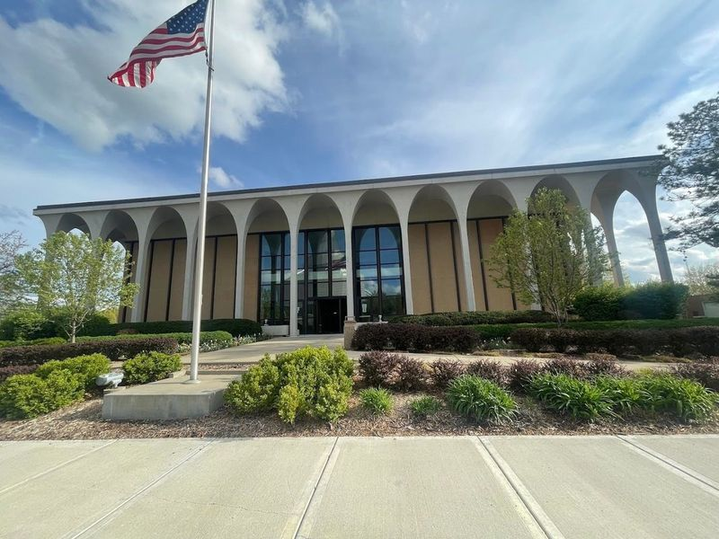
Independence Visitors' Center
The Independence Visitors' Center is a significant historic site in the area, showcasing exhibits and tours focused on the Mormon settlers of the 1830s. The center is known for its friendly and knowledgeable staff, who offer an exceptional experience for visitors of all ages. The facility itself is clean and peaceful, offering a sense of calm upon entry.
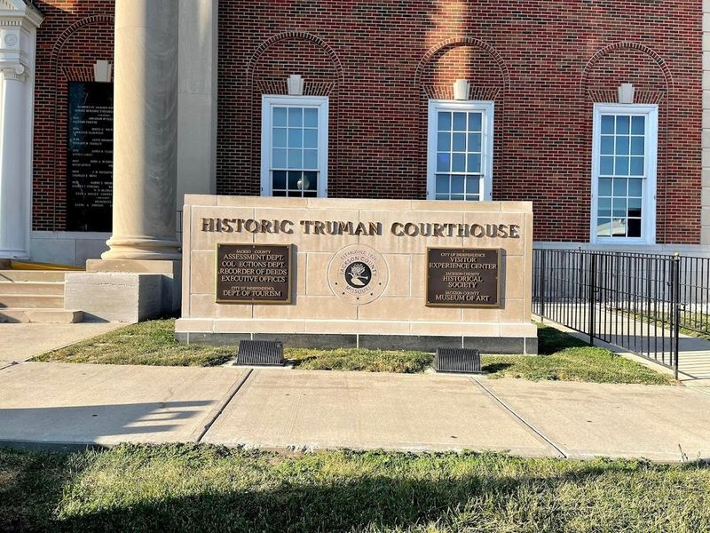
Historic Truman Courthouse
The Historic Truman Courthouse in Independence, Missouri, is a living museum that preserves the courthouse where Harry S. Truman worked before becoming President. Renovated in 1933 by architect George Frederick Waller, it features Colonial Revival-style architecture. The building also houses the assessment department for personal property taxes in Jackson County. Visitors should expect waits and security measures when visiting, but the staff are professional and helpful.
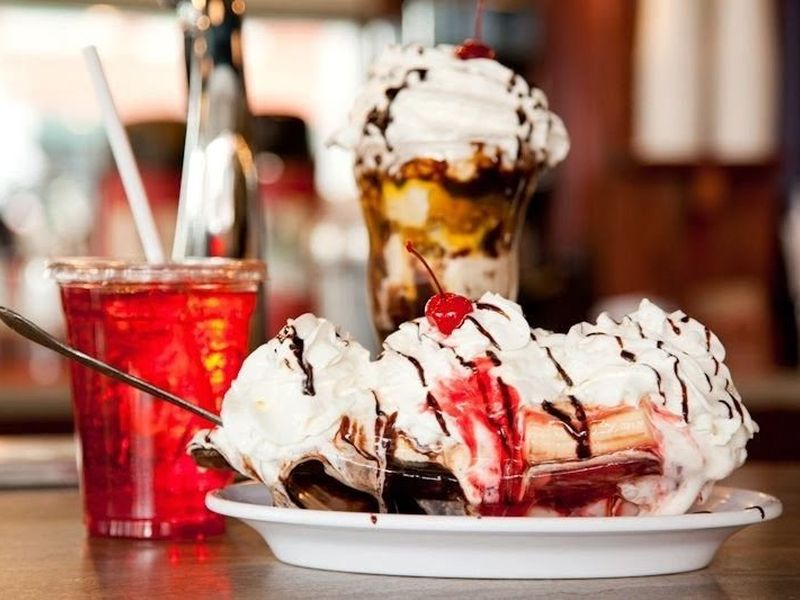
Clinton's Soda Fountain
Clinton's Soda Fountain is a long-standing ice cream and milkshake parlor located in a historic building with a marble bar. Situated about 20 minutes outside of Kansas City, this old-fashioned soda and malt shop has been serving customers since 1988. It holds historical significance as it was once frequented by Harry Truman before he became president.
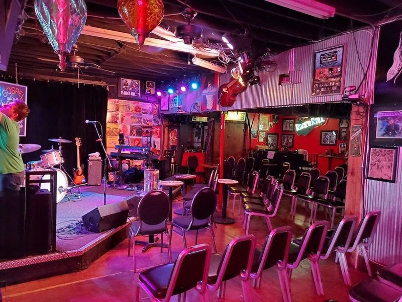
Knuckleheads
Knuckleheads is a renowned music venue in Kansas City that offers a diverse range of live performances, from rock to gospel. Housed in a former motorcycle shop, it features six stages across multiple buildings where various acts perform nightly. The venue has become an institution in the local music scene over its twenty-year history and attracts musicians.
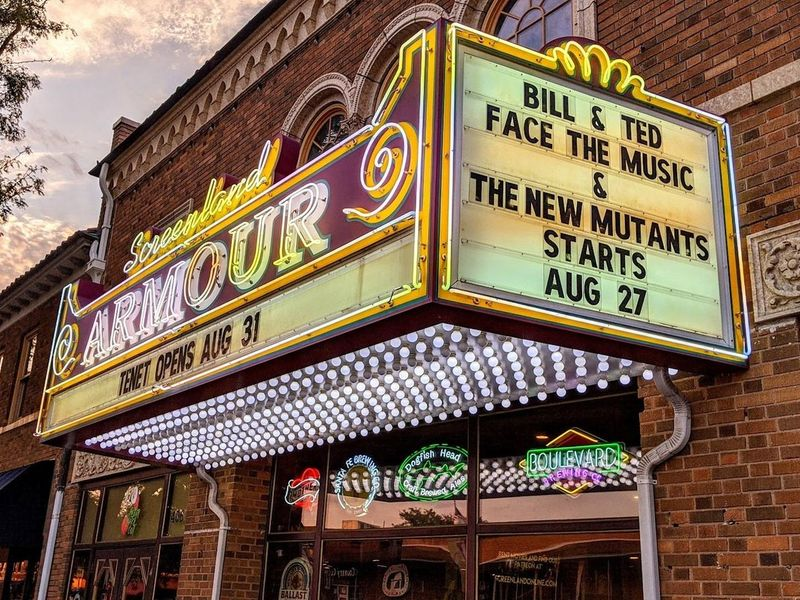
Screenland Armour Theatre
Located in North Kansas City, Missouri, the Screenland Armour Theatre is a historic local institution that offers a unique movie-watching experience. The theater showcases both big-budget and indie films and has been featuring a marquee since 1928. Visitors can enjoy an extensive selection of craft beer, cocktails, and tasty snacks like mac 'n' cheese bites and grilled cheese sandwiches while watching their favorite movies.
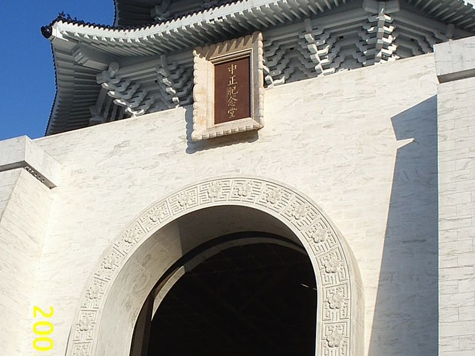
Memorial Hall
Memorial Hall anchors a familiar sightseeing stop in Kansas City, MO. Visitors encounter it along the city’s central routes through United States, often combining the visit with nearby parks, museums, and historic streets on the same itinerary. Street-level access and clear signage make it easy to reach on foot or by public transit from downtown districts.
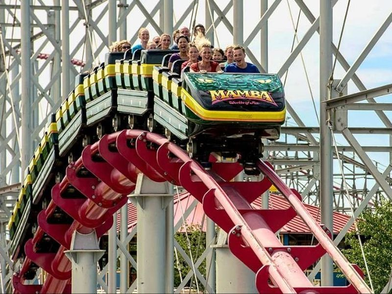
Worlds of Fun
Worlds of Fun is a sprawling 235-acre amusement park in Kansas City, offering an array of attractions for visitors of all ages. Divided into themed areas such as Africa, Americana, Europe, the Orient, and Scandinavia, the park features a variety of thrilling rides and roller coasters like the renowned Prowler. Families can also enjoy live entertainment and a Snoopy-themed kids' area called Planet Snoopy.